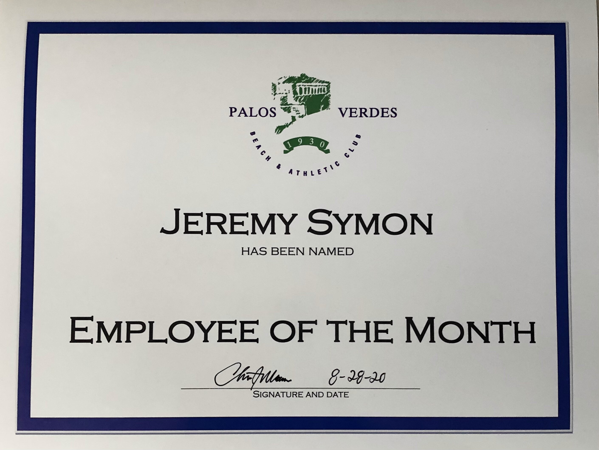

Jeremy Symon
I have always been passionate about business and the people surrounding it. I chose to be a business major because I would like to make connections with clients and make sales. I love to talk to people and connect with them on a personal level. I also have a good sense of humor and I use it whenever I can. My father has been a business man for decades and I love to talk to him about his work as well as how I can become successful in the business world one day. I love hearing success stories in business and I dream to see myself telling a story like that.
I am a second-year business student at the University of California Riverside. I am set to graduate in 2023 and I look forward to entering a professional career. At this school, I am trying my best to stay on top of my work and develop useful skills that will help me later in life. I have, so far, flourished in my business core classes and I expect this trait to carry-on into my upper division classes in my junior and senior year. Aside from classes, I have learned a lot socially from this school. It was an interesting adjustment from leaving my small hometown to a place with thousands of students from different parts of the country. It gave me an opportunity to learn more about different people and different ways of living.
I am a hardworking and dedicated person. I enjoy helping those around me and I can accomplish a goal when I put my mind to it. I have a good work ethic and a work-oriented mindset. I love conversation and in-depth debates. Perfection is one of my goals in my schoolwork as well as any other task in life. Handling multiple tasks in one day has never been much of a challenge for me and I can take a creative approach in problem solving. Organization has always been key in my school work as well as my personal life. I've always found that being organized makes everything so much easier. I can always manage my time and I never let outside life factors affect my attitude about work. My time is rather flexible and I can easily work things into my schedule. I like to imagine innovative ideas in my free time and wonder how they can affect the real world. Aside from work, I enjoy trying new things on my free time and spending time with my friends. I'm never late for work, class, social gatherings, or any other sort of event with a set time. I always show respect and I am polite to everyone. I like to remain positive in stressful situations and work hard to see the light at the end of the tunnel.
Experience
Lifeguard
• 3 years experience
• Ensured safety of pool deck and surrounding areas
• Experience resolving disputes between members
Principal's Advisory Council
• Responsible for discussing issues on school campus
• Developed program for student rehabilitation
Hospital Volunteer
• Assisted patients with wheel chairs
• Took patients to their destinations in the facility
• Conversed with patients about their family, their time in service, etc.
Education
UC Riverside
Portfolio
